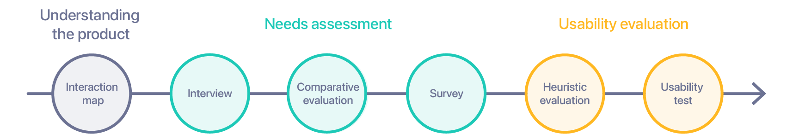
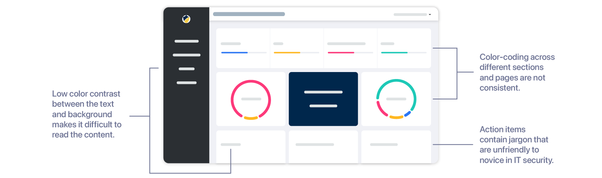
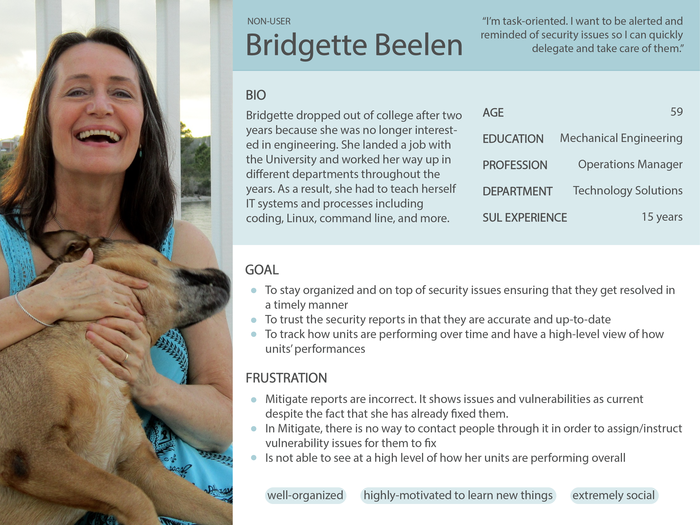
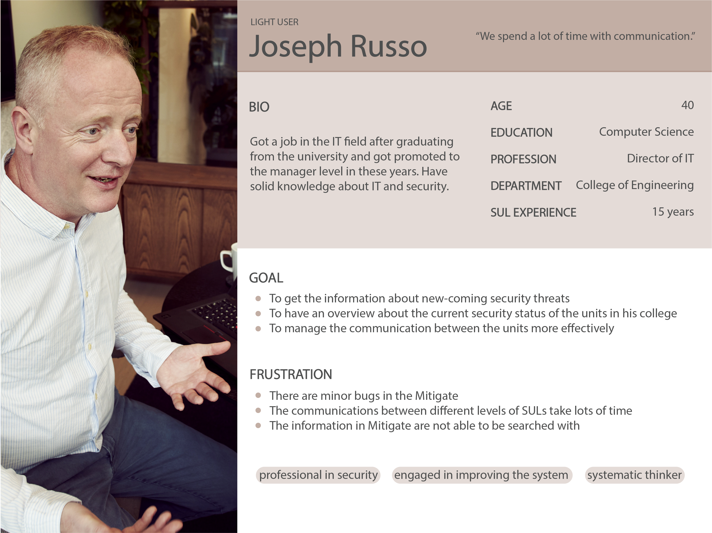
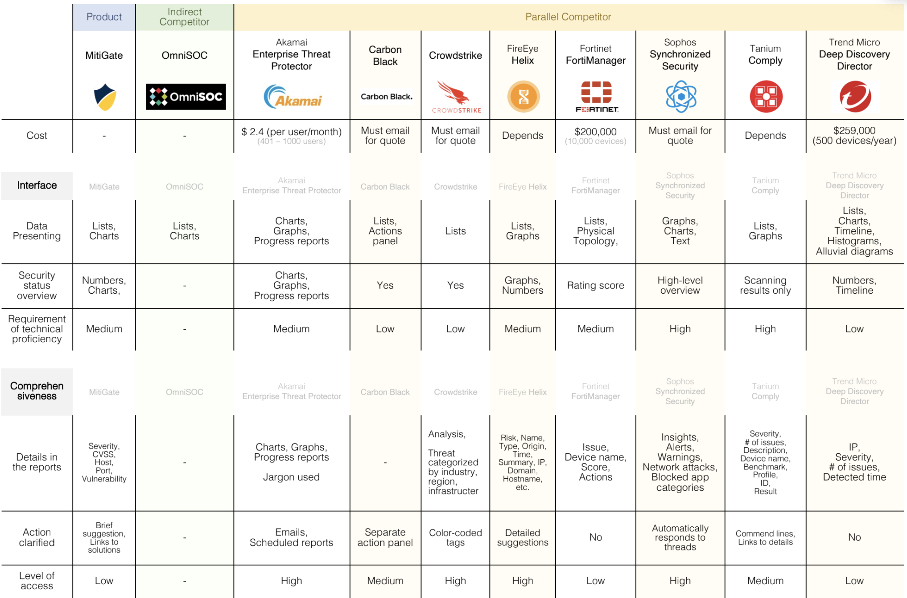
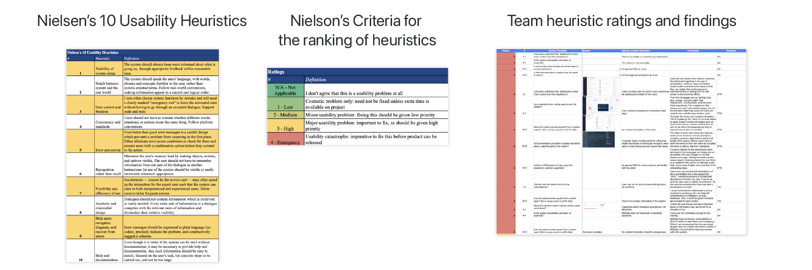
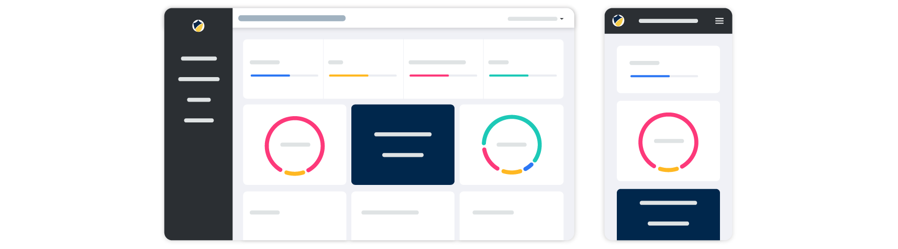
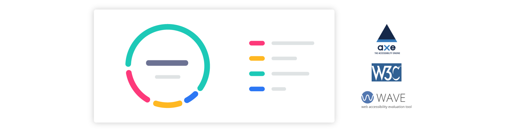
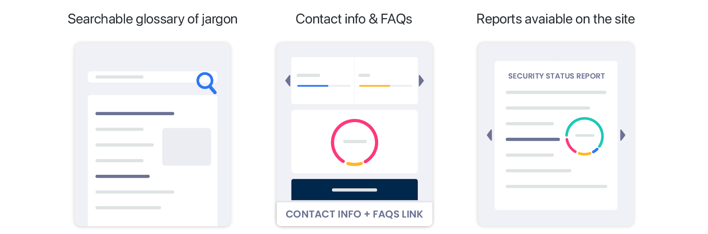
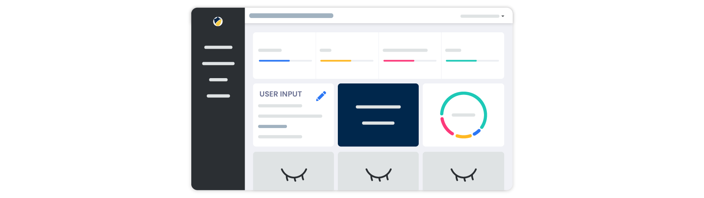

Project overview
MitiGate, a cyber security system created by UM
MitiGate is a centralized portal for internet security data. It was created by the University of Michigan Information Assurance (IA) to provide Security Unit Liaisons with the ability to examine, address, and remediate their units’ security issues.
Even though MitiGate was designed specifically for SULs, the IA Information Systems Security Manager is concerned that it is not easy to understand for users with little to no background in IT security.
Role
UX researcher from Jan - April 2020
Team
Yun-Jen Cheng, Gina Herakovic, Gordon Nenadovic
Methods
Interview, comparative evaluation, survey, heuristic evaluation, usability test
Process
Mixed-method research project
We started with creating interaction maps to picture how users interact with the portal. We then moved on to assess user needs by conducting interviews with Security Unit Liaisons, designed and analyzed surveys, did comparative analysis on industry cyber security products, and created personas to illustrate our findings.
After that, we proceed to evaluate usability through heuristic evaluation and usability tests.

Mixed-method research process
Interaction map
Understand the current product and how it works
To gain a high-level understanding of the current features, interactions, and user flows, we poked through the site and created interaction sitemaps accordingly.
Since the working site includes sensitive security data, I am not able to show the real product here. I instead recreated the views with minimal details shown below.

Exploring interactions and possible usability issues
User interviews and personas
Security Unit Liaisons and their stories
We conducted 5 user interviews to understand how intuitive MitiGate is and locate problems that Security Unit Liaisons (SULs) with levels of expertise in IT security are facing.
Among the 5 interviewees, 1 is our stakeholder, the IA Information Systems Security Manager, and the rest are SULs working for different departments on the campus.

Persona of a "Non-user"

Persona of a "Light-user"

Persona of a "Middle-light-user"
Comparative evaluation
Strengths and weaknesses of competitors on the market
Though MitiGate is an internal tool developed to help streamline the process of solving security issues within an academic institution, we believe looking into industry products to see other solutions are handling challenges in similar problem space is worthwhile.
We identified 1 indirect competitor and 8 parallel competitors to help us better understand the landscape.

Comparative analysis on other cyber security products
Surveys
Reached out to more than 90% of end users
We developed a survey to reach out to more SULs and collect broader feedback on their experience with the system. Due to Covid, we only received one response on the pilot test, but fortunately we were able to collect 25 responses from SULs with our official survey that was open for a week.
Heuristic evaluation
Identified usability issues with Nielsen’s 10 Usability Heuristics
We used Nielsen’s 10 Usability Heuristics for User Interface Design and Ratings for Usability Problems as a broad umbrella to examine the dashboard interface and define the seriousness of each issue found.

Nielsen’s 10 Usability Heuristics for User Interface Design
We first evaluated MitiGate independently and came back as a group to parse through the data in search of common patterns and themes.
3
Security Unit Liaisons participants
Multiple levels of IT security background
2
University graduate students
Novice in IT security and the system
Findings and recommendations
Located usability issues to mitigate
Re-evaluate the aesthetic of MitiGate with a higher focus on responsive design and accessibility
While MitiGate is visually appealing in desktop view, we found that the mobile view was not up to date. The icon, hamburger menus, and some other UI elements are not aligned with the most updated version we see in full screens.
Based on the finding, we suggest working on responsive design and make sure information users see from different devices is consistent and up-to-date.

Ensure the elements on the mobile view and web view are consistent
Also, from initial exploration, interviews and heuristic evaluations, we discovered that colors of text do not have enough contrast with the background. This increased extra barriers for users to perceive and take actions from the information provided.
To solve the issue, we recommend trying out free accessibility checkers such as WAVE, aXe, and the W3C Markup Validator.

Evaluate MitiGate for accessibility using WAVE, aXe, and the W3C Markup Validator
Improve Documentation and Support
Information gathered from interviews and surveys revealed that Security Unit Liaisons (SULs) are not all experienced with IT security. MitiGate had done a good job in data visualization, and that made handling security issues in each department less intimidating. However, users expressed that there could be more documentation as well as other forms of support such as a searchable glossary of jargon and basic contact information or FAQs.
Through usability tests, we observed that currently, users go from MitiGate to several other external pages to collect pieces of information to handle security issues. Consolidating detailed reports to the system might not be an easy fix compared to other usability issues. This can be a long-term goal that needs further planning.

Users' needs on documentation and support
Enable customization
From the comparative evaluation we conducted, we discovered that traditionally cyber security management platforms serve as a one-stop dashboard where users browse through the data and take actions accordingly.
However, during interviews, users have mentioned that they would love to have a more customized experience. For example, allowing them to update their progress on the dashboard and hide certain parts of information that they do not interact with at all.

Enable users to update their progress and decide what sections to show on the dashboard
Reflection
Limitations
Though our team has extensive experience with technology, none of us have been exposed to IT security work. We evaluated the system based on usability guidelines we consulted and did our best in designing tasks and analysing user pain points through interviews, surveys, and usability tests. However, since we are novice in this field, it is very likely that somehow we were influenced by amateur perspectives.
Also, due to the outbreak of Covid, we conducted usability tests in remote environments where there were additional barriers observing users perform tasks and express emotions through facial expressions.
Next steps
For next steps, we envision that Information Assurance at the University of Michigan ITS can benefit from our research by prioritizing the findings and recommendations based on level of urgency, ease of development, and cost of implementation.